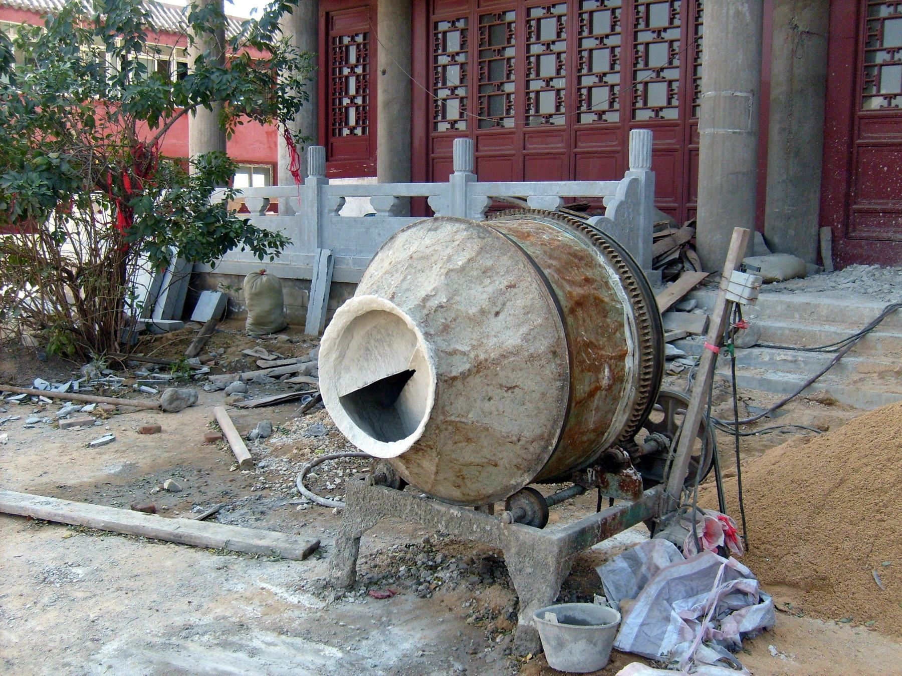
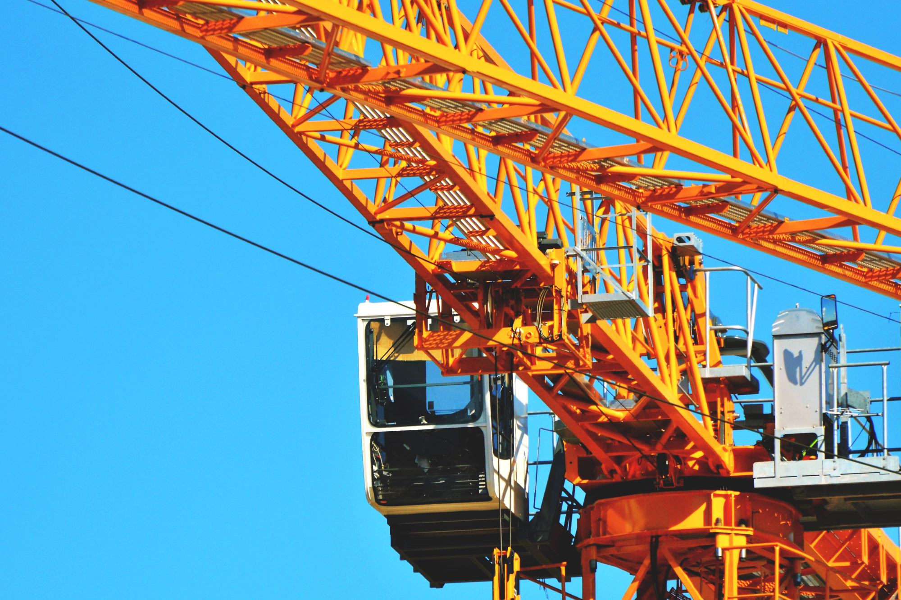
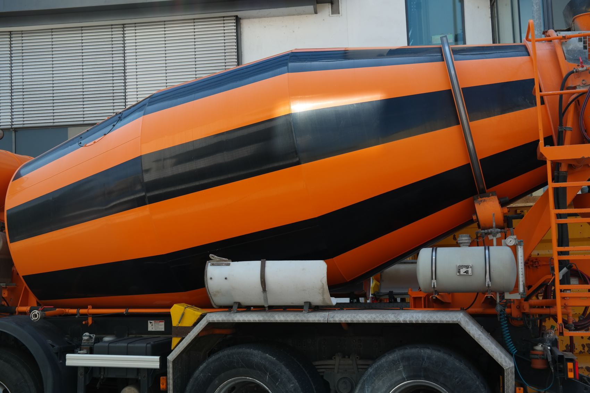
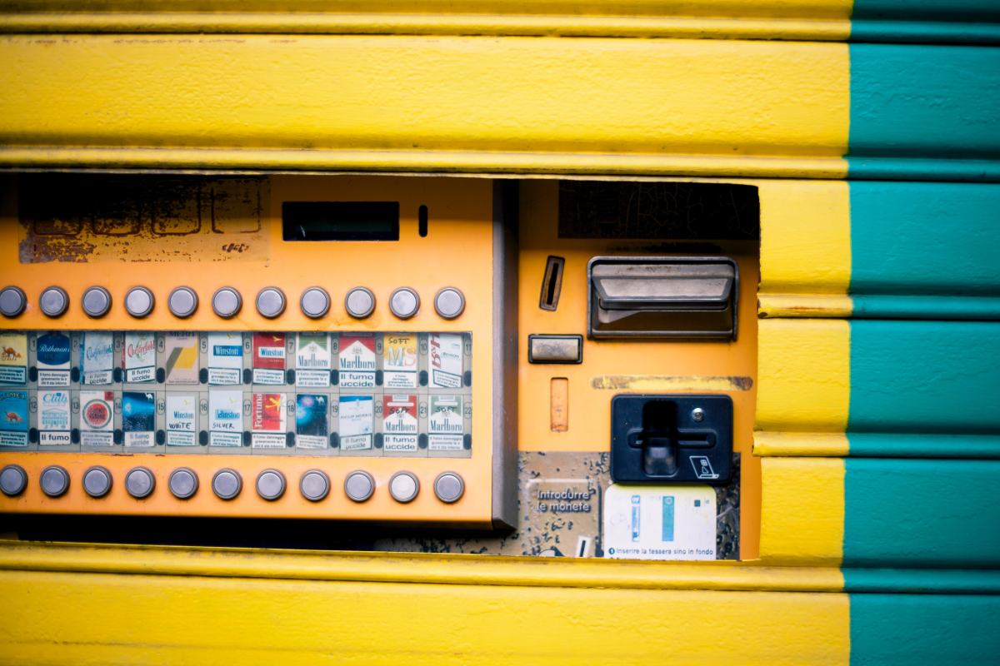
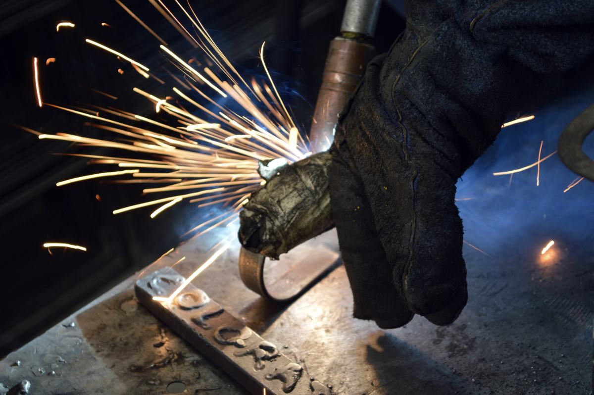
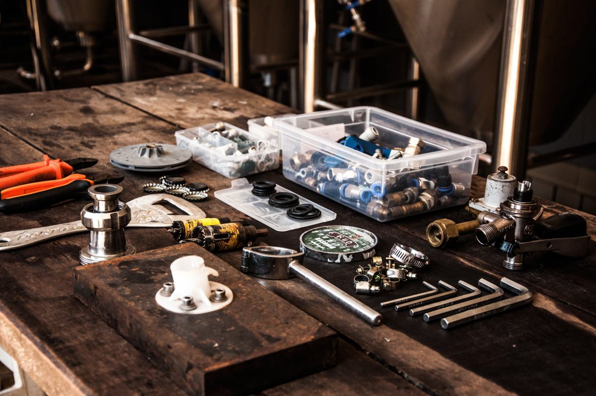
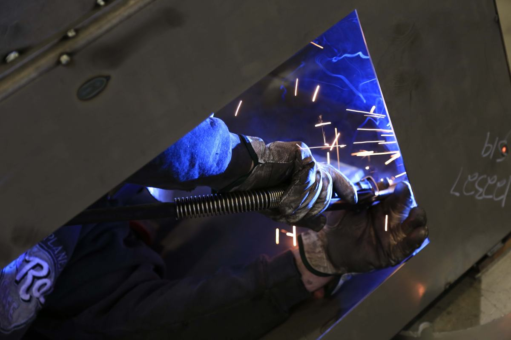
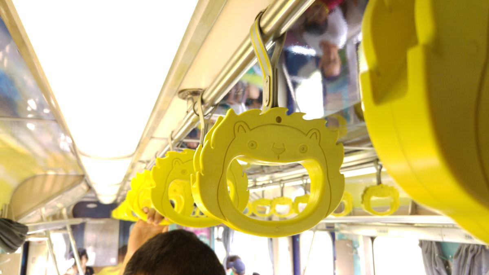
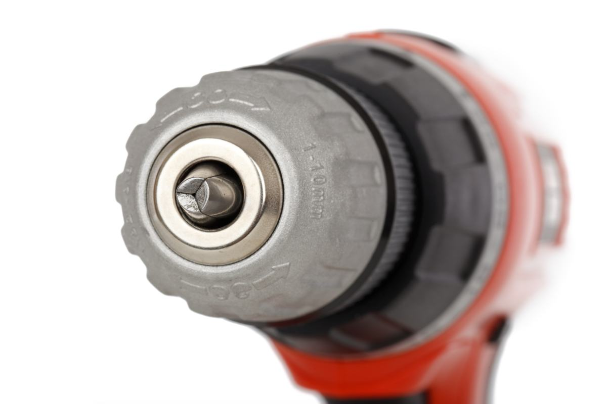

Angol · Región de La Araucanía
La máquina barata
sale cara
el día que se rompe.
No por la máquina: por el repuesto. Una betonera que se para en marzo y necesita una pieza que hay que traer de afuera deja la obra detenida, y ahí el ahorro de la compra se fue completo. Esta página parte por ese punto, que es el que nadie mira antes de pagar.
01 — La pieza de esta página
Seis preguntas antes
de comprar una máquina.
Todas se hacen antes de pagar y ninguna es sobre el precio. La máquina se compra una vez y se mantiene durante años, y eso es lo que decide si fue barata de verdad.
- 01
¿Hay repuestos, y dónde?
La pregunta que ordena todas las demás. No «¿tiene garantía?»: garantía tienen todas. Lo que importa es si mañana se consigue el rodamiento, la correa o el switch sin esperar un mes. Una máquina sin repuesto en el país es un adorno el día que se para.
- 02
¿Quién la repara si falla?
Y dónde queda. Un servicio técnico a quinientos kilómetros existe en el papel y no existe en marzo. Vale la pena preguntar si el mismo vendedor repara o a quién manda.
- 03
¿Qué motor trae?
En muchas máquinas el motor es la mitad del valor y casi todo el problema futuro. Un motor de marca conocida se repara en cualquier parte; uno sin nombre, no.
- 04
¿Cómo se mueve y dónde se guarda?
Peso, ruedas, si sube a una camioneta o necesita carro. Y bajo techo: casi todo lo que se compra para la obra se echa a perder guardado a la intemperie, no trabajando.
- 05
¿Qué mantención pide, y cada cuánto?
Aceite, filtros, correas, tensión de cadena. No para hacerla uno mismo necesariamente: para saber en qué se está metiendo antes de comprar.
- 06
¿Trae manual y placa legible?
Parece un detalle y es lo que permite pedir un repuesto por teléfono tres años después. La placa con el modelo y el número de serie es la identidad de la máquina: si viene borrosa o pegada con calcomanía, mala señal.
Estas seis son conocimiento general del rubro, escrito por mí, y sirven para comprar en cualquier parte. No describen el catálogo de Mundo Metal ni recomiendan ninguna marca: qué vende, de qué marcas y con qué respaldo lo completa el negocio antes de publicar. En toda la página no hay ni un precio ni una marca de tercero.

Nadie compra una máquina.
Compra los años en que va a andar.
02 — La pregunta honesta
Comprar o arrendar.
Un vendedor que dice «siempre conviene comprar» está vendiendo, no aconsejando. Hay trabajos donde arrendar es lo correcto, y decirlo es lo que hace que el cliente vuelva cuando sí le toca comprar.
Conviene comprar
- Si la va a usar todas las semanas. Con uso continuo el arriendo se paga solo en poco tiempo, y además la máquina está cuando se necesita.
- Si el trabajo es lejos. Ir a buscarla y devolverla cada vez suma más que la máquina.
- Si tiene dónde guardarla bajo techo y quién la mantenga.
- Si necesita tenerla el mismo día que aparece el trabajo. En temporada alta el arriendo no siempre tiene.
Conviene arrendar
- Si es para un trabajo puntual. Comprar una máquina para usarla dos veces al año es plata quieta.
- Si es una máquina grande que no tiene dónde guardar.
- Si todavía no sabe si ese tipo de trabajo va a repetirse. Arrendar primero es la forma barata de averiguarlo.
Esta comparación es del rubro, no de este negocio. Qué vende Mundo Metal y si además arrienda lo dice Mundo Metal: esta sección explica cuándo conviene cada cosa, no promete un servicio.

Quién compra maquinaria en Malleco
Contratistas, constructoras chicas y el que se cansó de arrendar.

03 — Lo que un contratista busca escrito
Un catálogo
es media venta.
El que compra maquinaria no llama para preguntar qué hay. Busca el modelo, compara dos o tres, y recién entonces llama para preguntar precio y plazo. Si no hay nada que mirar, esa llamada no ocurre.
Y hay algo que Angol tiene a favor: la mayoría de los proveedores de maquinaria están en Temuco o en Santiago. Un contratista de Malleco prefiere comprar cerca, si sabe que existe.
- Hormigoneras y vibradores
- Compactadores — placas y ranas
- Generadores y motobombas
- Soldadoras
- Corte y demolición
- Andamios y accesorios
- Repuestos y servicio
Lista de ejemplo de las familias que suele tener un proveedor de maquinaria de construcción. Qué vende Mundo Metal de verdad, de qué marcas y si tiene servicio técnico, lo completa el negocio: está armada y vacía a propósito, y acá no se nombra ninguna marca.
04 — El fierro
Motor, chasis
y una placa con número.






05 — Contacto
Preguntar por una máquina.
Si ya tiene una máquina y lo que necesita es un repuesto, tenga a mano la placa: con el modelo y el número de serie la consulta se resuelve en una llamada.
- Ciudad
- Angol, Región de La Araucanía
- Dirección exacta
- falta — no está publicada
- Horario
- falta — hay que confirmarlo
- ¿Tiene servicio técnico?
- falta — y es lo que más vende
- ¿Vende repuestos?
- falta — hay que confirmarlo
- ¿Despacha a la región?
- falta — y hasta dónde
- ¿También arrienda?
- falta — hay que confirmarlo
Las seis líneas en cursiva son las que hay que llenar antes de publicar. «¿Tiene servicio técnico?» y «¿vende repuestos?» son las dos que deciden una compra, y son justamente las que la página entera explica por qué importan.